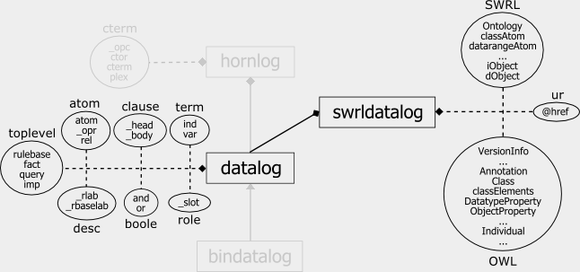

A proposal for a Semantic Web Rule Language (SWRL) combining OWL and RuleML has been submitted to the W3C. This document discusses changes to RuleML which permit access to SWRL properties as "foreign" atoms.
SWRL is a Semantic Web Rule Language based on a combination of the OWL DL and OWL Lite sublanguages of the OWL Web Ontology Language with the Unary/Binary Datalog RuleML sublanguages of the RuleML. It thus extends the set of OWL axioms to include Horn-like rules and enables Horn-like rules to be combined with an OWL knowledge base. For more information, consult the actual SWRL proposal to the W3C.
RuleML is now extended to permit access to SWRL properties as so-called "foreign" atoms. This is initially applied to the (Unary) Datalog sublanguage resulting in a new sublanguage called SWRL-Datalog. Both a monolithic and a modular version have been implemented (swrldatalog_monolith.xsd and swrldatag.xsd, respectively).
The implementation of the monolithic version of the SWRL-Datalog sublanguage only differs from the regular Datalog in a few ways:
(atom)
becomes
( atom | (swrlx:atom)* )
( atom | and | or )
becomes
( atom | (swrlx:atom)* | and | or )
( (_rlab, ( (_head, _body) | (_body, _head) )) | (_head, ( (_rlab, _body) | (_body, _rlab?) )) | (_body, ( (_rlab, _head) | (_head, _rlab?) )) )
becomes
( (_rlab, ( (_head, _body) | (Annotation*, _body, _head) )) | (_head, ( (_rlab, _body) | (_body, _rlab?) )) | (Annotation*, _body, ( (_rlab, _head) | (_head, _rlab?) )) )
Validating Monolithic SWRL Datalog XSD using Example 5.1-4 from proposal ======================================================================== 1. Direct your browser tohttp://www.w3.org/2001/03/webdata/xsv (Validator for XML Schema REC 20010502 version). 2. Enter the following URL of our example RuleML file (or any other) into the textfield preceded by "Address(es)": http://www.ruleml.org/swrl/exa/example5.1-4.swrlx 3. If desired, check the "Show Warnings" box. 4. Click the "Get Results" button. Note: The validation may take a while, and may require a full refresh when re-validating to avoid caching. Also note: Depending on your browser, you may want to select a different output using the radio buttons just above the "Get Results" button. *** You should get the following output (using the default): Schema validating with XSV 2.7-1 of 2004/04/01 13:40:50
Schema resources involvedAttempt to load a schema document from http://www.ruleml.org/swrl/xsd/swrlx.xsd (source: schemaLoc) for http://www.w3.org/2003/11/swrlx, succeeded Attempt to load a schema document from http://www.ruleml.org/swrl/xsd/owl1-dl.xsd (source: import) for http://www.w3.org/2003/05/owl-xml, succeeded Attempt to load a schema document from http://www.ruleml.org/swrl/xsd/owl1-lite-core.xsd (source: include) for http://www.w3.org/2003/05/owl-xml, succeeded Attempt to load a schema document from http://www.ruleml.org/swrl/xsd/xml.xsd (source: import) for http://www.w3.org/XML/1998/namespace, skipped, other docs already loaded for this namespace: Attempt to load a schema document from http://www.ruleml.org/swrl/xsd/owl1-dl-classElementGroup.xsd (source: include) for http://www.w3.org/2003/05/owl-xml, succeeded Attempt to load a schema document from http://www.ruleml.org/swrl/xsd/owl1-dl-descriptionGroup.xsd (source: include) for http://www.w3.org/2003/05/owl-xml, succeeded Attempt to load a schema document from http://www.ruleml.org/swrl/xsd/owl1-dl-restrictionGroup.xsd (source: include) for http://www.w3.org/2003/05/owl-xml, succeeded Attempt to load a schema document from http://www.ruleml.org/swrl/xsd/owl1-dl-domainRangeGroup.xsd (source: include) for http://www.w3.org/2003/05/owl-xml, succeeded Attempt to load a schema document from http://www.ruleml.org/swrl/xsd/owl1-lite-dataPropInverseFuncAttr.xsd (source: include) for http://www.w3.org/2003/05/owl-xml, succeeded Attempt to load a schema document from http://www.ruleml.org/swrl/xsd/owl1-dl-objectPropInverseFuncAttr.xsd (source: include) for http://www.w3.org/2003/05/owl-xml, succeeded Attempt to load a schema document from http://www.ruleml.org/swrl/xsd/swrldatalog_monolith.xsd (source: import) for http://www.w3.org/2003/11/ruleml, succeeded Attempt to load a schema document from http://www.daml.org/rules/proposal/swrlx.xsd (source: import) for http://www.w3.org/2003/11/swrlx, skipped, other docs already loaded for this namespace: Attempt to load a schema document from http://www.daml.org/rules/proposal/owlx/schema/owl1-dl.xsd (source: import) for http://www.w3.org/2003/05/owl-xml, skipped, other docs already loaded for this namespace: http://www.ruleml.org/swrl/xsd/owl1-lite-core.xsd http://www.ruleml.org/swrl/xsd/owl1-dl-classElementGroup.xsd http://www.ruleml.org/swrl/xsd/owl1-dl-descriptionGroup.xsd http://www.ruleml.org/swrl/xsd/owl1-dl-restrictionGroup.xsd http://www.ruleml.org/swrl/xsd/owl1-dl-domainRangeGroup.xsd http://www.ruleml.org/swrl/xsd/owl1-lite-dataPropInverseFuncAttr.xsd http://www.ruleml.org/swrl/xsd/owl1-dl-objectPropInverseFuncAttr.xsd http://www.ruleml.org/swrl/xsd/owl1-dl.xsd |
The implementation of the modular version of the SWRL-Datalog sublanguage involves the same extensions as the monolithic version but is fundamentally different.
Modular SWRL-Datalog uses the new model emerging from the evaluation of alternative modularizations of RuleML. Using the new model's UML-like representation, SWRL-Datalog looks as follows:
Instead of defining all elements of RuleML itself (as is the case with the monolithic version), swrldatalog.xsd uses aggregation to "inherit" everything from datalog.xsd making modifications as necessary (using xs:redefine). For example, atoms from SWRL are added to _head like so:
<xs:redefine schemaLocation="datalog.xsd">
...
<!-- _head's content model becomes: ( ruleml:atom | (swrlx:atom)* ) -->
<xs:group name="_head.content">
<xs:choice>
<xs:group ref="ruleml:_head.content"/>
<xs:group ref="swrlx:atom" minOccurs="0" maxOccurs="unbounded"/>
</xs:choice>
</xs:group>
...
<xs:redefine>
Site Contact:
Harold Boley.
Page Version: 2004-08-12
"Practice what you preach": XML source of this homepage at index.xml (index.xml.txt);
transformed to HTML via the adaptation of Michael Sintek's SliML XSLT stylesheet at homepage.xsl (View | Page Source)